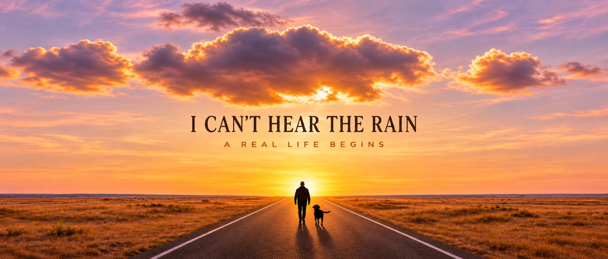
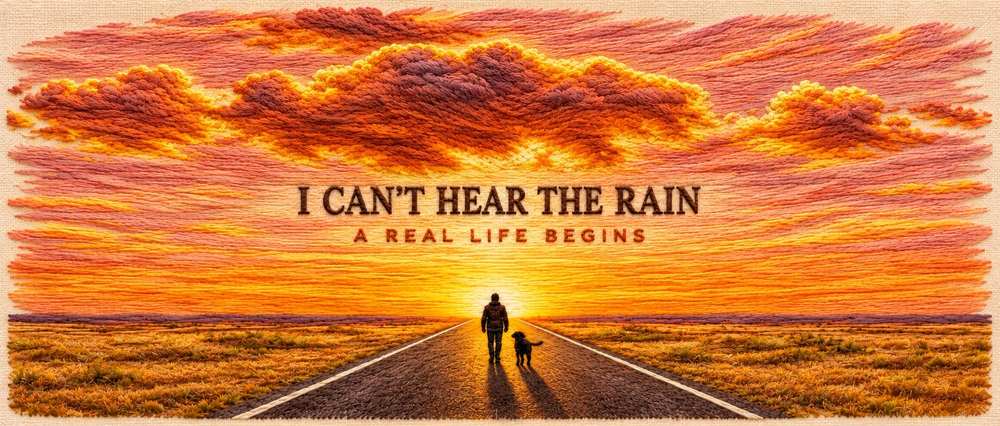

Support the organization
Dogs for Better Lives
Explore the hearing-dog program, or make a gift through the organization’s official giving page.
Visit official giving page ↗
A personal story about hearing loss, a dog who makes his life richer, and a new chapter beginning to unfold.
That’s the small sound that goes first. Then the doorbell, the oven timer, the smoke alarm. Someone calling my name from the other room. Then you don’t hear the phone ring. You don’t realize the details you’re missing in your favorite song. Then most of the world goes quiet, you would think—except for the tinnitus. It never stops.
On May 25, 2015, on my way to the WSOP (World Series of Poker), I was crossing the New Bridge over the Mississippi in Louisiana when an 18-wheeler pushed my little Mini Cooper into the outside guardrail. My front tire blew, and the car rolled 3 1/2 times before landing upside down.
At the hospital, I was diagnosed with a T3 compression fracture, a burst compression fracture at L1, a cracked sternum, a broken thumb, and a severe traumatic brain injury. The blast of all 6 airbags going off took my hearing.
So now, here I am, over a decade later. I have just moved to Las Vegas. I’m flat broke; I have no job, and I’m just now realizing how bad it is. I am turning 62. I can’t hear. I live in constant pain. And because of the TBI, sometimes I wake up unsure of where I am. The only thing I am sure of is… “I’m alone”
During my first month here, I realized I can’t hear if someone comes into the house or if the smoke alarm goes off. Hell, I don’t even hear the tea kettle whistling.
With my pride in my pocket and my tail between my legs, I went to Health and Welfare. They helped me. They gave me EBT and medical assistance. The wonderful woman behind the desk put her hand on mine and told me, “We’ve got you; you’ll be okay.”
I came home and cried. I had a full meltdown alone at two in the morning, with no one to talk to. So I started talking to my AI. It told me what I needed was a hearing service dog. I had never heard of such a thing, so I reached out to Dogs for Better Lives and started my journey to get one.
As part of this journey, I’ve seen a regular doctor and an audiologist. I’ve also received guidance about my back and brain injury. Since then, I’ve lost 30 pounds and decided to become a hearing aid specialist.
I’ve contacted Nevada Vocational Rehabilitation, hoping they’ll pay for my schooling. And with the help of Dustin Dove and his hearing center, I will have a job!
Then, out of nowhere, I received the news from Dogs for Better Lives: I made the cut! I’m on the list to receive a hearing service dog… “I am not sure I deserve this.”
So now I’m in a holding pattern on the waiting list. There’s no set date. It could be a day, a week, a month, or even two years. The not knowing is the hardest part.
He’s waiting, and he’s no good at it. He never was. He’s bought the books, cut a hole in the back door, put grass where the rocks were—all of it for a dog he hasn’t met. That’s how he loves. He builds.
Jake, Sadie, and me. We had a good run, and we all left too early, especially me. He still says our names every night before he goes to bed, and talks out loud in an empty kitchen like one of us might answer.
He’s broken and being alone is killing him. Nobody says that part out loud.
He doesn’t need fixing. He needs a reason to get up at seven.
So whoever you are, coming next—he built you a home before he ever knew your name. Be good to him. He’s got less left than he lets on.
And don’t worry—I’ll be at the front door to greet you and introduce you to my dad and your new best friend.
We miss you too, Dad.
Love, Levon, Jake, Sadie and the rest of the pack.
My life didn’t restart the moment I got the news, but it will start the morning Levon’s spirit lets me know that someone is at the door.
“I have done enough looking back. From here on out,
I am only looking forward.”
A Real Life Begins
A song Gabriel chose for this next chapter. Press play to listen through Apple Music.
Apple Music subscribers can hear the full track; other visitors may hear a preview.
Gabriel is creating a podcast under the name I Can’t Hear the Rain—a space to share his perspective, talk about what changes with hearing loss, and explore what a new beginning can look like.
Listening links and new episode announcements will be added here when the show is ready to launch.
A trained hearing assistance dog can alert a person to important sounds in daily life. Gabriel is working toward this next chapter and sharing the Dogs for Better Lives program with his community.
Learn about Dogs for Better Lives hearing dogs ↗
Gabriel is fundraising in connection with Dogs for Better Lives and the path toward a hearing assistance dog. We’ll make the destination of each contribution clear, so supporters know whether they’re giving to the organization or to Gabriel’s personal campaign.
Explore the hearing-dog program, or make a gift through the organization’s official giving page.
Visit official giving page ↗The direct link to Gabriel’s fundraiser will be added here as soon as it’s available.
The sunset-road design is becoming a keepsake, with magnets and other merchandise in the works. Shop details will appear here when they’re ready.
Back to the beginning